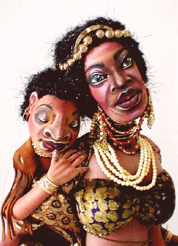

Go to the next Santa Fe Competition Doll
Email me with your questions or comments

Originally based on a poem that I wrote, this set of four dolls is centered around a main
African "mother" figure with a portrait painted flat face. She, and each of her sleeping
babies is wire armatured. The grouping is set on a handcrafted base with mesquite and
polished semi-precious stones and crystals.

"Ivory Coast Lullaby"
Where the grassland meets the open sea,
She stands with dignity and grace.
Elder wife of the tribal chief;
Woman of an ancient, mystic place.
The secrets and sins of her people she keeps.
In her soul, tucked away, are their stories and rhyme.
Their history lives in the lines in her face.
Their legend will transcend the passage of time.
Above all this, she's a mother first;
Her most important task at hand.
The hot savannah day grows cool,
The setting sun slips past the land.
The water caresses the rocky shore,
On the sea, the moon plays a crystal light.
For as much as they try to stay awake,
Her little ones fade as the day turns to night.
Gently she whispers the songs of her heart,
With her lullaby stick in hand.
And tonight, as always, they'll dream in peace
In the warmth of the sun-washed sand.
~Anne-Marie Brombal © 2000
Email me with your questions or comments